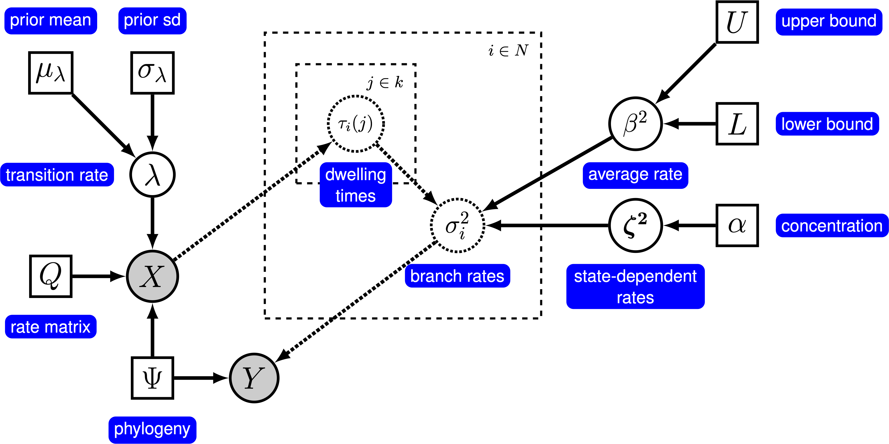
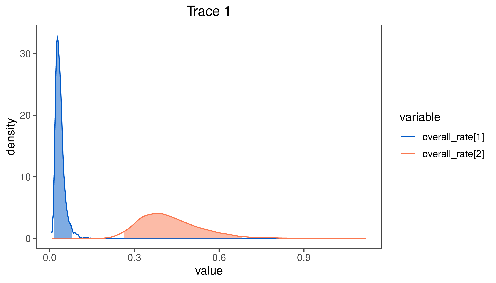
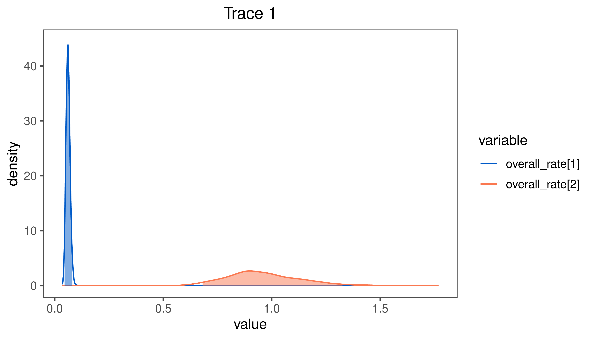
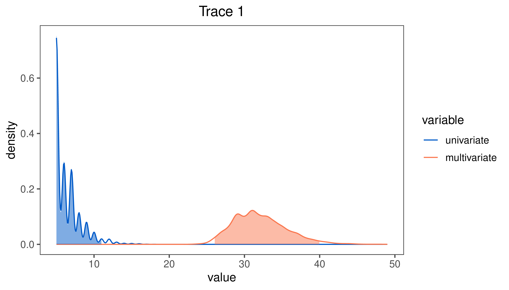

This tutorial demonstrates how to estimate state-dependent rates of continuous-character evolution. Specifically, we will specify a state-dependent rate model that assigns a Brownian-motion rate parameter for each state of a discrete character. We provide the probabilistic graphical model representation of each component for this tutorial. After specifying the model, you will estimate the state-dependent rates of Brownian-motion evolution using Markov chain Monte Carlo (MCMC).
A State-dependent Model of Brownian-motion Evolution
Under a simple Brownian-motion (BM) model, the evolution of a continuous character is entirely determined by a single rate parameter, $\sigma^2$. However, we may be interested in testing hypotheses about whether the state of a discrete character (e.g., habitat) are associated with differential rates of continuous-character evolution.
In this tutorial, we will specify the state-dependent model described in May and Moore (2019). Under this model, the rate of continuous-character evolution depends on the state of a discrete character that is also evolving on the phylogeny. We must therefore specify a model that includes both the continuouss characters and the discrete character. For a discrete character with $k$ states, we include $k$ BM rate parameters, $\boldsymbol{\zeta^2} = [\zeta^2_0, \ldots, \zeta^2_k]$ that describe the relative rate of evolution of the continuous character while the discrete character is in each state (these parameters have a mean of 1). We include a parameter that controls the ‘‘average’’ rate of continuous-character evolution, $\beta^2$; because the state-dependent relative rates have a mean of 1, $\beta^2$ controls the overall rate of the Brownian motion process. Finally, we include a continuous-time Markov chain model to describe the evolution of the discrete character, which is defined by the instantaneous-rate matrix $Q$.
Under this model, the changes in the continuous character while the discrete character is in state $j$, $\Delta_j$, are normally distributed with mean 0 and variance $t_j \beta^2 \zeta^2_j$, where $t_j$ is the amount of time spent in state $j$. The total change over the entire branch is a sum of normally distributed random variables:
Consequently, the rate of evolution on branch $i$ is the weighted average of the state-dependent rates, weighted by the amount of time spent in each state:
where $\tau_i(j)$ is the relative amount of time branch $i$ spends in discrete-state $j$ (the relative dwelling time). Given a particular history of the discrete character, which describes the amount of time spent in each state along each branch, we can therefore compute the branch-specific rates of continuous-character evolution over the entire tree. We use data augmentation to map the history of discrete characters across the tree, and use Markov chain Monte Carlo to integrate over all possible histories of the discrete character in proportion to their probability. The probabilistic graphical model for this model is represented in ().

The graphical model representation of the state-dependent Brownian-motion (BM) process. For more information about graphical model representations see Höhna et al. (2014).
In this tutorial, we use the phylogenies and continuous character datasets from (Price et al. 2013; May and Moore 2019) to estimate state-dependent rates of continuous-character evolution.
⇨ The full state-dependent BM-model specification is in the file called mcmc_state_dependent_BM.Rev.
Read the data
In this tutorial, we will use univariate Brownian motion to analyze the state-dependent rates of a single continuous character. Here, we assume we are analyzing the first character (log body size), but you should feel free to choose any of the 9 characters described in the haemulidae_trophic_traits.nex file.
character <- 1
Now, we read in the (time-calibrated) tree and retrieve some useful information.
We can also include all of the continuous characters in a multivariate analysis. In this case, we don’t exclude any characters, and instead retrieve the number of characters in the dataset.
Additionally, we initialize a variable for our vector of
moves and monitors:
moves = VectorMoves()
monitors = VectorMonitors()
Specifying the model
Tree model
In this tutorial, we assume the tree is known without area. We create a constant node for the tree that corresponds to the observed phylogeny.
tree <- T
Discete-character model
Here, we assume that the discrete character evolves under a Mk model with rate $\lambda$ (Lewis 2001). This is equivalent to the Jukes-Cantor model for nucleotide substitution, but with $k$ states. (You may consider a more complex model if you know how to specify it in ‘RevBayes’).
Q <- fnJC(num_disc_states)
We draw the rate parameter, $\lambda$, from a vague log-uniform prior.
lambda ~ dnLoguniform(1e-3, 2)
The rate parameter must be positive, so we apply a scaling move to it.
moves.append( mvScale(lambda, weight=1.0) )
Now, we draw the discrete character data and its character history from a CTMC model.
X ~ dnPhyloCTMCDASiteIID(tree, Q, branchRates=lambda, type="Standard", nSites=1)
The distribution dnPhyloCTMCDASiteIIDaugments the data to include the complete history of the discrete character(s) along each branch of the phylogeny (the DA in dnPhyloCTMCDASiteIID stands for data augmentation). We must apply special MCMC proposals on the character history to average over all possible histories in proportion to their probability.
These proposals choose nodes or branches in the tree to update, and then propose a new history using the stochastic mapping algorithm (Nielsen 2002; Landis et al. 2013).
Finally, we keep track of the number of discrete-character transitions along each branch, and over the whole phylogeny. This is mostly a sanity check, to make sure we are not inferring extremely unrealistic histories for the discrete character.
As indicated in the graphical model above (), we parameterize the model by separating the average rate of continuous-character evolution (averaged among the discrete-states), $\beta^2$, from the relative rate of state-dependent evolution, $\boldsymbol{\zeta^2}$. The parameter $\beta^2$ gives the Brownian motion process its absolute ‘scale’, so if rates of evolution are high, $\beta^2$ will be high. The absolute rate of evolution in discrete state $i$ is $\beta^2 \times \zeta^2_i$.
We draw the average rate of evolution, $\beta^2$, from a vague loguniform prior. This prior is uniform on the log scale, which means that it is represents ignorance about the order of magnitude of the average rate of evolution. We use a scaling move to propose updates to this parameter.
Next, we draw the proportional rates of state-dependent evolution from a Dirichlet prior with parameter concentration <- 1.0. These rates are proportional in the sense that they sum to 1.
We include a special move for simplex parameters (sets of parameters that sum to 1) called mvBetaSimplex.
moves.append( mvScale(beta, weight=1.0) )
To compute the relative rates (i.e., the rates that have a mean of 1), we simply multiply the proportional rates by the number of elements.
zeta := proportional_zeta * num_disc_states
We can compute the absolute rate of evolution in each of the discrete states by multiplying $\beta \times \zeta$.
overall_rate := beta * zeta
Now, we compute the rate for each branch given the parameters of the state-dependent model and the history of the discrete character. The method X.relativeTimeInStates(i,1) computes the relative amount of time spent in each state of the first discrete character (in this case, we have only one character) on branch $i$, i.e., it computes $\tau_i(j)$. Multiplying $\tau_i(j)$ by the vector $\boldsymbol{\zeta^2}$, and taking the sum, produces the rate of evolution for branch $i$ due to the discrete character history. We compute this for each branch in the tree.
for(i in 1:nbranches) {
state_branch_rate[i] := sum(X.relativeTimeInStates(i,1) * zeta)
}
Finally, we compute the overall branch rates by multiplying the state-dependent branch-rates by the average rate of change.
branch_rates := state_branch_rate * beta
Alternative: Multivariate model
To use multivariate data, we must also specify a prior model for the variance-covariance matrix, $\Sigma$. See the tutorial Multivariate Brownian Motion for more information about this model.
First, we specify the relative rates of change among the continuous characters.
Next, we specify an LKJ prior on the partial correlation matrix, $P$, and transform it into a full correlation matrix, $R$.
eta <- 1.0
P ~ dnLKJPartial( eta, nchar )
moves.append( mvCorrelationMatrixRandomWalk(P, weight=3.0) )
moves.append( mvCorrelationMatrixSingleElementBeta(P, weight=5.0) )
R := fnPartialToCorr(P)
correlations := R.upperTriangle()
Finally, we construct the variance-covariance matrix, $\Sigma$, from the relative rates for each character and the correlation matrix.
V := fnDecompVarCovar( relative_rates^0.5, R )
Brownian-motion model
Now that we have specified the branch-specific rate parameters, we can draw the character data from the corresponding phylogenetic Brownian-motion model, just as we did for the simple BM models. In this case, we provide the square root of the branch-specific rates to the branchRates argument.
Y ~ dnPhyloBrownianREML(tree, branchRates=branch_rates^0.5)
Noting that $Y$ is the observed continuous-character data, we clamp the cont variable to this stochastic node.
Y.clamp(cont)
Alternative: Multivariate model
When performing a multivariate analysis, we replace the dnPhyloBrownianREML with dnPhyloMultivariateBrownianREML and provide V ($\Sigma$) as an additional argument.
Y ~ dnPhyloMultivariateBrownianREML(tree, branchRates=branch_rates^0.5, rateMatrix=V)
Y.clamp(cont)
Finally, we create a workspace object for the entire model with model(). Remember that workspace objects are initialized with the = operator, and are not themselves part of the Bayesian graphical model. The model() function traverses the entire model graph and finds all the nodes in the model that we specified. This object provides a convenient way to refer to the whole model object, rather than just a single DAG node.
mymodel = model(zeta)
Running an MCMC analysis
Specifying Monitors
For our MCMC analysis, we need to set up a vector of monitors to record the states of our Markov chain. The monitor functions are all called mn*, where * is the wildcard representing the monitor type. First, we will initialize the model monitor using the mnModel function. This creates a new monitor variable that will output the states for all model parameters when passed into a MCMC function.
With a fully specified model, a set of monitors, and a set of moves, we
can now set up the MCMC algorithm that will sample parameter values in
proportion to their posterior probability. The mcmc() function will
create our MCMC object:
When the analysis is complete, you will have the monitored files in your output directory.
⇨ The Rev file for performing this analysis: mcmc_state_dependent_BM.Rev
You can then visualize the absolute rates of state-dependent evolution ($\beta^2 \times \boldsymbol{\zeta^2}$) in Tracer.

Estimates of the posterior distribution of the $\beta^2 \times \zeta^2$ visualized in
Tracer.
Results: Multivariate model
If you ran the multivariate analysis, your posterior distributions for the state-dependent rates will look quite different. In the multivariate analysis, the effect of habitat is more pronounced than it was for the univariate analysis.

Estimates of the posterior distribution of the $\beta^2 \times \zeta^2$ under the multivariate model.
However, comparing the posterior distribution for the number of habitat transitions under the univariate and multivariate analysis () reveals that the inferred number of transitions under the multivariate analysis is very unrealistic ($\approx 32$ transitions) compared to the univariate analysis ($\approx 6.5$ transitions). This is a strong indication that there are other sources of rate variation that are causing the multivariate analysis to infer very unrealistic patterns of habitat evolution.

Estimates of the posterior distribution of the the number of habitat transitions under the univariate model (green) and the multivariate model (blue).
Exercise 1
Run an MCMC simulation to estimate the posterior distribution of the state-depedent rates (zeta) assuming a concentration parameter of 1.
Repeat the above analysis with a concentration parameter of 10.
Compare the posterior estimates of the state-dependent rates under these two priors in Tracer. Do the posterior estimates appear prior sensitive?
Testing Hypotheses About State-Dependent Rates
In the previous section, we learned how to estimate the posterior distribution of state-dependent rate parameters, $\zeta^2$. However, we might also be interested in explicit hypothesis tests about state-dependent rates, especially if the posterior distributions of the focal parameters are overlapping. In this section, we will learn how to use reversible-jump Markov chain Monte Carlo to test the hypotheses that rates of continuous-character evolution depend on the state of the discrete character.
Model Selection using Reversible-Jump MCMC
To test the hypothesis that rates depend on the discrete state, we imagine two models. The first model, where states do not depend on the discrete character, is the case when $\zeta_i^2 = 1$ for all $i$, i.e., when all of the discrete characters confer the same rate of discrete character evolution. The second model corresponds to the state-dependent model described previously.
Obviously, the state-independent model is a special case of the state-dependent model when $\zeta_i^2 = 1$ for all $i$. Unfortunately, because the $\zeta^2_i$ are continuous parameters, a standard Markov chain will never visit states where each value is exactly equal to 1. Fortunately, we can use reversible jump to allow the Markov chain to consider visiting the state-independent model. This involves specifying the prior probability on each of the two models, and providing the prior distribution for $\boldsymbol{\zeta^2}$ for the state-dependent model.
Using rjMCMC allows the Markov chain to visit the two models in proportion to their posterior probability. The posterior probability of model $i$ is simply the fraction of samples where the chain was visiting that model. Because we also specify a prior on the models, we can compute a Bayes factor for the state-dependent model as:
where $P( \text{state-dependent} \mid X, Y)$ and $P( \text{state-dependent})$ are the posterior probability and prior probability of state-dependent rates, respectively.
Reversible-jump for state-dependent rates
To enable rjMCMC, we simply have to place a reversible-jump prior on the relevant parameter, $\boldsymbol{\zeta^2}$. We can modify the prior on proportional_zeta so that it takes either a constant value where all rates are equal (simplex(rep(1, num_disc_states))), or is drawn from a Dirichlet prior distribution, dnDirichlet( rep(concentration, num_disc_states) ). We specify a prior probability on the state-independent model of p = 0.5.
We include a variable that has a value of 1 when the chain is visiting a state-dependent model. This will allow us to easily compute the posterior probability of the state-dependent model because we simply need to compute the posterior mean value of this parameter.
The fraction of samples for which is_state_dependent = 1 is the posterior probability of the state-dependent model. Alternatively, the posterior mean estimate of this indicator variable corresponds to the posterior probability of the state-dependent model.
Exercise 2
Modify the mcmc_state_dependent_BM script to use reversible-jump MCMC for the state-dependent model.
Compute the posterior probability of the state-dependent model assuming a prior on the state-independent model of p = 0.5.
Repeat the analysis, but this time specify a prior corresponding to a $75\%$ prior belief in the state-independent model.
For each of the above priors, compute the corresponding posterior probabilities and Bayes factors for the state-dependent model. Are these estimates prior sensitive?
Controlling for Background-Rate Variation
The previous models have assumed that, aside from rate variation owing to the state of the discrete character, rates of continuous-character evolution are stochastically constant. We might therefore be worried that inferences about state-dependent rates of evolution might be mislead if rates of evolution vary for reasons other than the focal discrete character, which we call ‘‘background-rate variation’’ (Rabosky and Goldberg 2015; Beaulieu and O’Meara 2016; May and Moore 2019).
The state-dependent model allows us to easily build in these alternative sources of rate variation. In this case, we simply relax the assumption that the ‘‘average’’ rate is constant by applying a relaxed morphological clock prior model on $\beta^2$, as described in Relaxed Brownian Rate Estimation.
⇨ The state-dependent BM-model with background rate variation is specified in the file called mcmc_relaxed_state_dependent_BM.Rev. The majority of this script is the same as mcmc_state_dependent_BM.Rev, except as described below.
Relaxing the background-rate of evolution
To specify the relaxed background-rate model, we specify the background rate at the root of the tree, $\beta^2_R$.
We must also specify the prior on the magnitude of rate shifts (when they occur). This prior supposes that rate shifts result in changes of rate within one order of magnitude.
Then we draw the rate multiplier from each branch from a dnReversibleJumpMixture distribution, and compute the background-rate of evolution for each branch.
for(i in nbranches:1) {
# draw the rate multiplier from a mixture distribution
branch_rate_multiplier[i] ~ dnReversibleJumpMixture(1, rate_shift_distribution, Probability(1 - rate_shift_probability) )
# compute the rate for the branch
if ( tree.isRoot( tree.parent(i) ) ) {
background_rates[i] := beta_root * branch_rate_multiplier[i]
} else {
background_rates[i] := background_rates[tree.parent(i)] * branch_rate_multiplier[i]
}
# keep track of whether the branch has a rate shift
branch_rate_shift[i] := ifelse( branch_rate_multiplier[i] == 1, 0, 1 )
# use reversible-jump to move between models with and without
# shifts on the branch
moves.append( mvRJSwitch(branch_rate_multiplier[i], weight=1) )
# include proposals on the rate mutliplier (when it is not 1)
moves.append( mvScale(branch_rate_multiplier[i], weight=1) )
}
We may also wish to keep track of the total number of rate shifts.
num_rate_changes := sum( branch_rate_shift )
Later, when we compute the branch-rates for the dnPhyloBrownianREML distribution, we simply multiply the state-dependent branch rates by the background branch-rates.
and then provide these rates to dnPhyloBrownianREML.
Y ~ dnPhyloBrownianREML(tree, branchRates=branch_rates^0.5)
⇨ The Rev file for performing this analysis: mcmc_relaxed_state_dependent_BM.Rev
You can then visualize the branch-specific rates by plotting them using our R package RevGadgets. Importantly, these plots allow you to tease apart the relative contributions of background- and state-dependent-rate variation to overall patterns of rate variation across the tree. Just start R in the main directory for this analysis and then type the following commands:
Estimated rates of Brownian-motion evolution with state-dependent and background-rate variation.
Left) We show the state-dependent rates of continuous-character evolution, indicating that increased rates are strongly associated with living in reefs. Middle) We show the background rates of continuous-character evolution, indicating mild rate variation that cannot be attributed to the state of the discrete character. Right) We show the combined effect of state-dependent and state-independent sources of rate variation.
Exercise 3
Estimate the posterior distribution of the state-dependent rate parameters assuming a relaxed background-rate model.
Compare the posterior estimates from the relaxed background-rate model to the posterior estimates from the constant background-rate model (i.e., mcmc_state_dependent_BM.Rev). Are our estimates of the state-dependent parameter inflated by excluding sources of rate variation other than the discrete character?
Repeat the analysis with background-rate variation, but increase the expected number of rate shifts. Does this impact our estimates of the focal parameter, $\boldsymbol{\zeta^2}$?
Beaulieu J.M., O’Meara B.C. 2016. Detecting hidden diversification shifts in models of trait-dependent speciation and extinction. Systematic Biology. 65:583–601.10.1093/sysbio/syw022
Landis M.J., Matzke N.J., Moore B.R., Huelsenbeck J.P. 2013. Bayesian Analysis of Biogeography when the Number of Areas is Large. Systematic Biology. 62:789–804.
Lewis P.O. 2001. A Likelihood Approach to Estimating Phylogeny from Discrete Morphological Character Data. Systematic Biology. 50:913–925.10.1080/106351501753462876
May M.R., Moore B.R. 2019. A Bayesian Approach for Inferring the Impact of a Discrete Character on Rates of Continuous-Character Evolution in the Presence of Background Rate Variation. bioRxiv.10.1101/576207
Nielsen R. 2002. Mapping mutations on phylogenies. Systematic Biology. 51:729–739.10.1080/10635150290102393
Price S.A., Tavera J.J., Near T.J., Wainwright P.C. 2013. Elevated rates of morphological and functional diversification in reef-dwelling haemulid fishes. Evolution: International Journal of Organic Evolution. 67:417–428.
Rabosky D.L., Goldberg E.E. 2015. Model inadequacy and mistaken inferences of trait-dependent speciation. Systematic Biology. 64:340–355.10.1093/sysbio/syu131